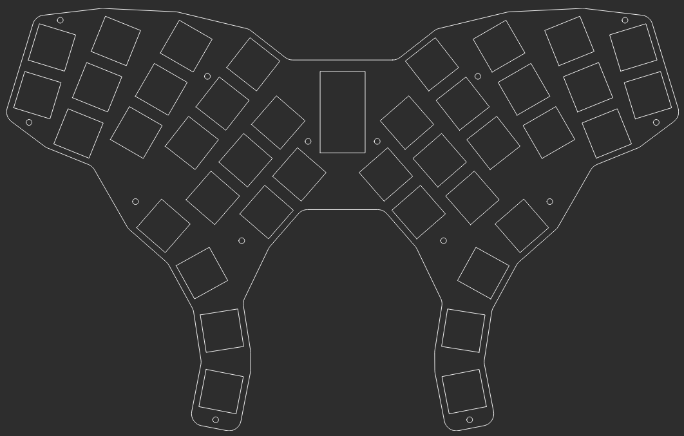
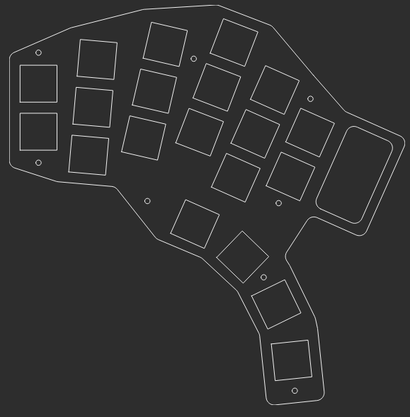
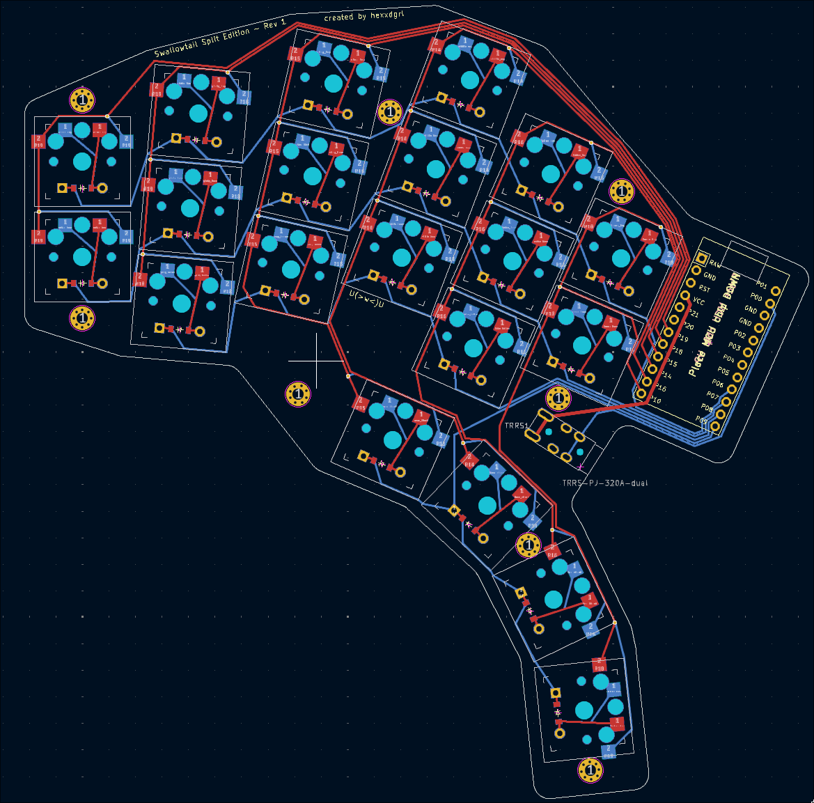

This is an ongoing project and this page probably wont be complete for a fair while... keep checking back if you're interested! All the config files, kicad files, etc. are in the github repo if you're looking for those! This is just somewhere for me to write out what I did to make it !
I started designing this board as I was frustrated with my failure to assemble a PCB kit (lol, I know). I didn't want to spend that money on another PCB kit, so I figured... why not make my own? I started with ergogen, a fantastic and relatively speaking easy to use tool.
After a lot of tinkering, I came up with the first design, a non-split with MX switches as thats what im used to.
You can definitely see where the name comes from. However, I decided to go a different route. I really enjoy having a split board, so I designed a split version. It uses choc switches, a first for me despite the many, MANY keyboards I've built over the last 5 years.
The PCB for the split (the only PCB I've routed so far) took a lot of iterations, and a lot of trial and error. However, the PCB files have been sent off for manufacture and are en-route to me as this is being typed.
I am extremely happy with the way the board looks on the screen and I am absolutely ecstatic to see it in RL.